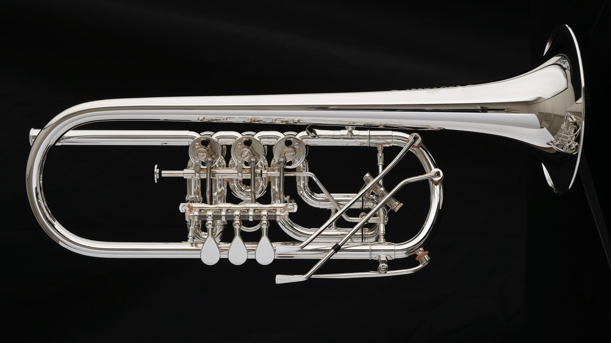

The C Trumpet
The C trumpet is arguably the most versatile of the trumpets. Back in the day, composers would write music for a multitude of differently pitched trumpets as there were a million different kinds of trumpets back then. In Beethoven's 7th Symphony, the trumpet part is written in D and E, meaning that the players would play D and E trumpets and read the music. Many Classical and Romantic trumpet parts are written in a whole ton of keys, and players are expected to "transpose", which means to look at the written note and play the actual note. If your part is in B-flat, you'll look at a C on the page, and play a concert B-flat instead, as you have to transpose from B-Flat to C. This is a skill that is expected of professional classical trumpet players aross the world.
You might be asking, "why not just bring a B-Flat to play the part in B-Flat or just write the B-Flat music in C?"
The C trumpet is pitched in a way that gives it a bit deeper of a tone, and it's easier for players to sound loud and grand on the C trumpet than it is on the B-Flat trumpet. You absolutely could just play the Bb music on the Bb trumpet, but it's not the social norm, nor is it going to match the minute tuning and tone differences of the orchestra, which the C trumpet is created to match. As for why we don't write the B-Flat music in C, many orchestral pieces will have the player switch keys during the piece. You could very easily start a piece pitched in C, and then the music pitches to Bb, and then to D, and then to A. Sheet music producers simply don't rewrite all of these pitch changes, and leave it up to the player to do the transposition on their own.
You'll find the C trumpet in symphonic orchestras. If you go to a symphony concert or watch a movie, it's likely that you'll be hearing the C trumpet. The C trumpet, once again as its name suggests, is pitched in C, making it pitched in the same key as pianos, string instruments, trombones, tubas, and the flute.
A European rotary trumpet, commonly seen in Germany and continental Europe.